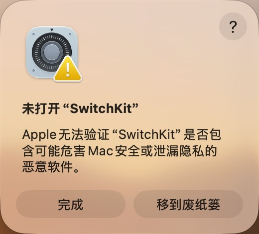
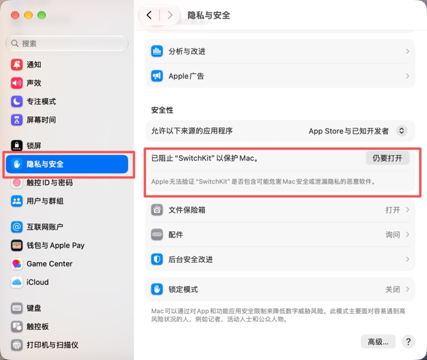
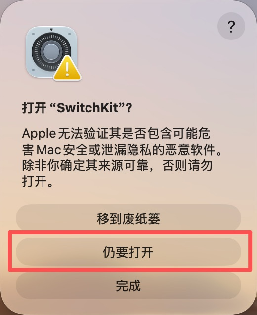
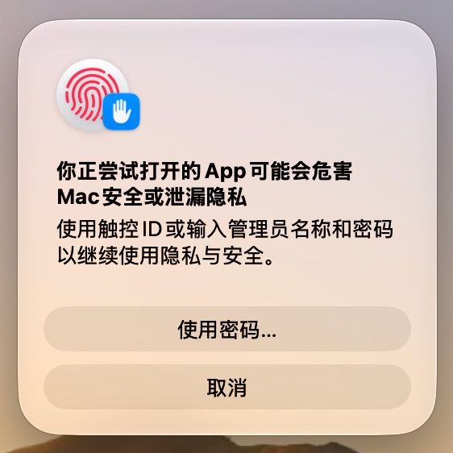

SwitchKit 是一款 macOS 专属的菜单栏快捷开关 + 系统资源释放工具。一键深色模式、阻止睡眠、释放内存、管理蓝牙、查看多平台模型余额——常驻菜单栏，体积极小。
深色模式、隐藏桌面图标、阻止睡眠、清空废纸篓、隐藏 Dock、显示隐藏文件、屏幕清洁、台前调度（macOS 13+）。
锁定屏幕、清空剪贴板、启动屏幕保护、一键关闭所有应用（优雅退出，自动跳过自身与 Finder）。
列出已配对设备，一键连接 / 断开。走系统 IOBluetooth 框架，无第三方依赖。
释放内存（purge）、刷新 DNS、清理用户缓存（白名单 + 预览 + 二次确认），释放前后智能对比。
DeepSeek、Kimi、智谱 GLM、阶跃星辰、Novita、OpenRouter、302.AI、AiHubMix 及中转站，多账号混排、60 秒自动刷新。
像 Bartender / Ice 一样收纳其它 App 的菜单栏图标：默认收起，点亮的才显示，自动记住布局。
一键注册 LaunchAgent，自带单实例保护，不会出现双托盘图标。
基于 tauri-plugin-updater，面板「检查更新」一键下载安装并重启，无需手动来回。
缓存删除仅限白名单且在主目录内；root 操作凭据不落盘、不进日志；默认不联网、不上报。
无 Dock 图标，常驻菜单栏。点击图标即可展开，所有状态实时反映系统真值。
三步完成。分发包为 ad-hoc 签名、未公证，按下方提示首次放行即可。
brew install blueutil（可选）| 权限 | 用途 |
|---|---|
| 自动化 (Finder) | 清空废纸篓、关闭所有应用 |
| 完全磁盘访问 | 清理 Safari 等受保护缓存（需重启 App 生效） |
| 蓝牙 | 列出 / 连接蓝牙设备 |
| 管理员密码 | 释放内存、刷新 DNS（凭据不落盘） |
/Applications（「应用程序」文件夹）。不要在压缩包内直接双击运行。启动后没有 Dock 图标，点菜单栏上的 SwitchKit 图标即可展开面板。若下方步骤仍提示「已损坏，无法打开」，在终端执行下面命令移除隔离属性后重试：
xattr -dr com.apple.quarantine /Applications/SwitchKit.app
熟悉终端的用户也可全程用命令行完成下载、解压与首次放行：
# 1. 下载（以 universal 为例，按需替换版本号与架构） curl -LO https://github.com/samjoeyang/unoSwitchKit/releases/download/v0.4.1/SwitchKit-0.4.1-universal.zip # 2. 解压（分卷先合并：zip -s 0 X.zip --out full.zip && unzip full.zip） unzip SwitchKit-0.4.1-universal.zip -d /tmp/sk mv /tmp/sk/SwitchKit.app /Applications/ # 3. 移除隔离属性并打开（绕过 Gatekeeper 拦截） xattr -dr com.apple.quarantine /Applications/SwitchKit.app open /Applications/SwitchKit.app
launchctl unload ~/Library/LaunchAgents/com.switchkit.app.plist 2>/dev/null rm -f ~/Library/LaunchAgents/com.switchkit.app.plist rm -rf /Applications/SwitchKit.app rm -rf ~/Library/Application\ Support/com.switchkit.app




遇到问题、提建议、看更新动态，来 Telegram 群组找我们。扫码或搜索 @UNOSWITCHKIT 即可加入。
SwitchKit 完全免费、无广告、不收集数据。若它让你的 Mac 更好用，欢迎赞助，支持持续开发。
每一份支持都会用于：服务器与证书费用、新功能研发、以及……作者的咖啡续杯。🙏